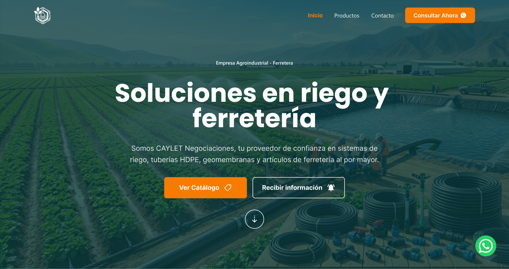
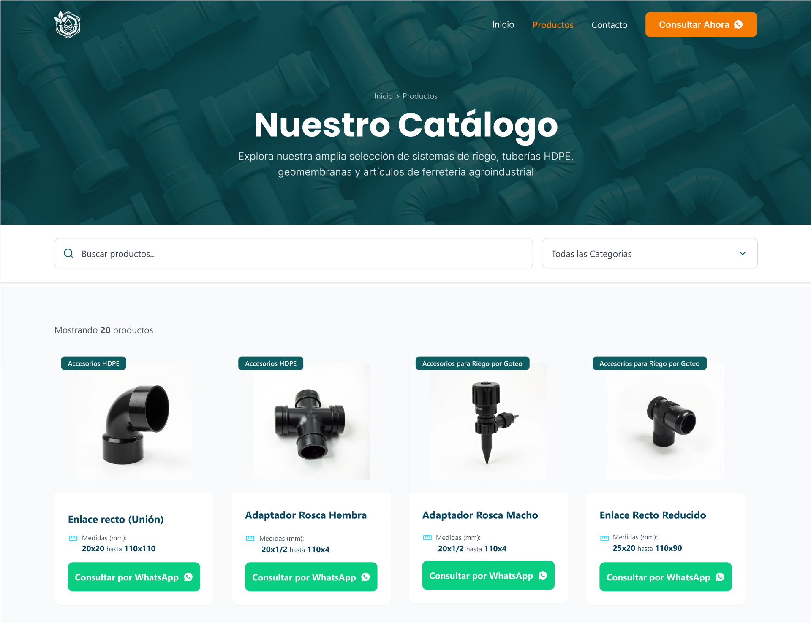
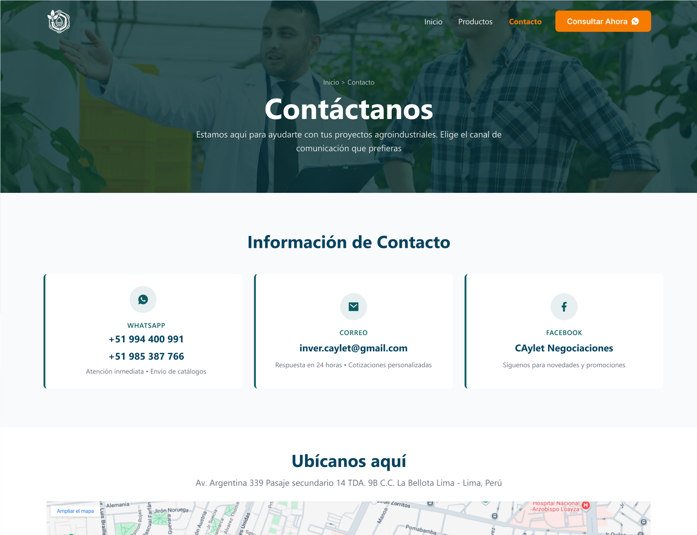
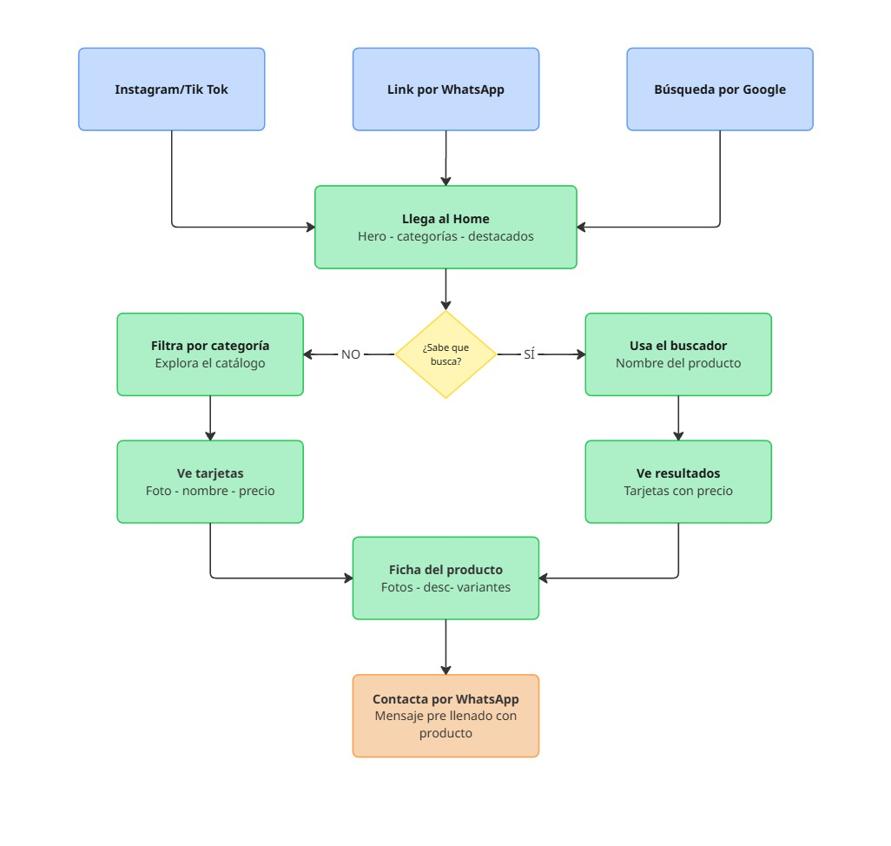

Diseño y desarrollo de un sitio web con catálogo de productos filtrables, buscador y contacto directo por WhatsApp — convirtiendo un PDF estático en una experiencia de compra navegable para los clientes B2C de Caylet.
Cuando un cliente contactaba a Caylet por WhatsApp o redes sociales preguntando por un producto, el equipo de ventas le enviaba un catálogo PDF de 50 páginas. El cliente tenía que desplazarse manualmente por todo el archivo para encontrar lo que buscaba, sin filtros, sin buscador y sin forma de ver detalles o variantes del producto.
Para el equipo de ventas, mantener el PDF actualizado era un proceso lento: cada nuevo producto o cambio de precio requería editar el archivo, exportarlo y volver a compartirlo. No había forma de saber qué productos generaban más interés ni de medir la conversión de consultas a ventas.
"Vi el producto en Instagram, pregunté por WhatsApp y me mandaron un PDF enorme. No encontré lo que buscaba y terminé comprando en otro lado."
"Paso el día enviando el mismo PDF por WhatsApp. Si el cliente pregunta por algo específico, tengo que buscar yo misma en el archivo antes de responder."
"Necesito poder agregar o actualizar productos sin depender de un desarrollador cada vez que cambia algo."
Diseñé y desarrollé un sitio WordPress con WooCommerce como base de catálogo. El cliente puede navegar por categorías, usar el buscador, ver el detalle de cada producto y con un clic abrir WhatsApp con un mensaje pre-llenado. Sin carrito, sin pagos — el objetivo era reducir la fricción al máximo para que el cliente llegue a ventas ya con el producto elegido.

Vista del home con hero, categorías destacadas y productos en tendencia

Vista de catálogo con filtros por categoría y buscador

Vista de información de contacto
El flujo cubre el recorrido completo del cliente B2C: desde que descubre la marca en redes sociales o recibe el link de ventas, hasta que hace clic en "Consultar por WhatsApp" con el producto que le interesa. Cada paso está diseñado para reducir la fricción y acortar el tiempo entre el interés y el contacto.

Flujo completo del cliente B2C: descubrimiento → catálogo → producto → WhatsApp